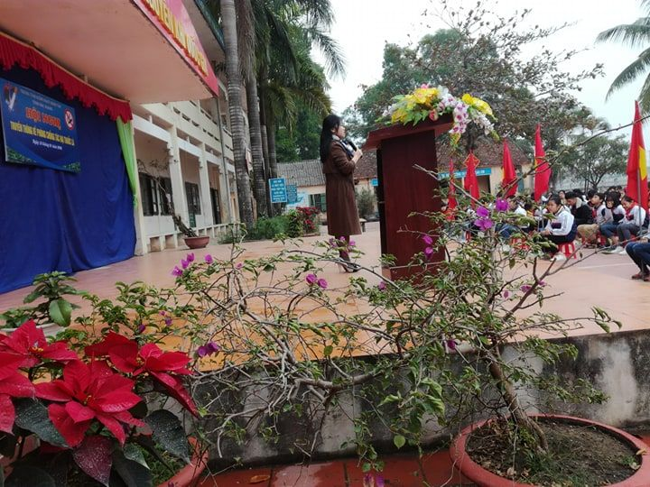
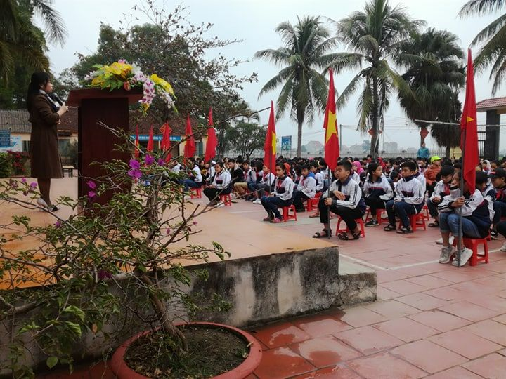
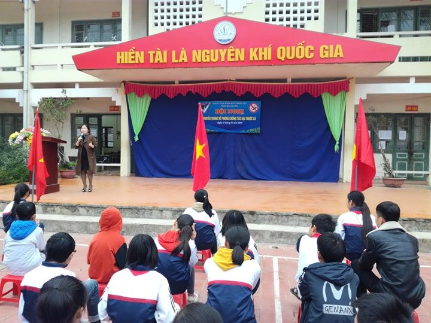
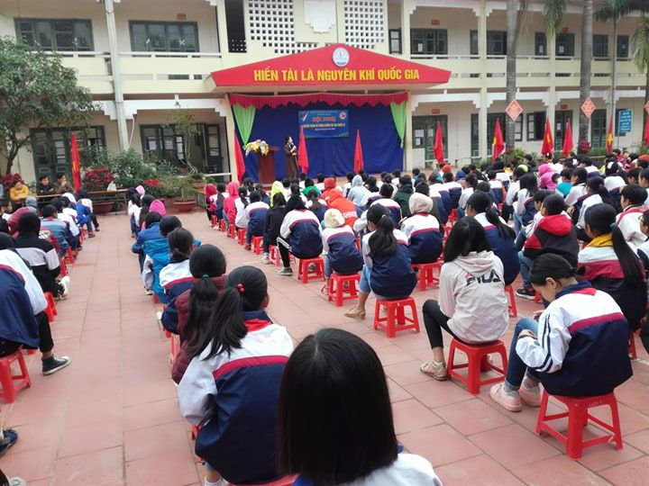
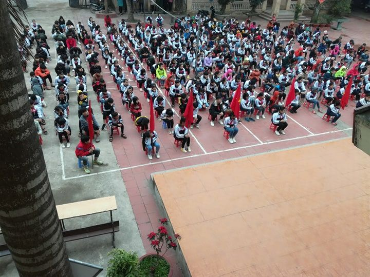

Tuyên truyền tác hại của thuốc lá
Tuyên truyền tác hại của thuốc lá
Thực hiện công văn liên ngành của Trung tâm y tế Huyện Hiệp Hòa, ngày 13/1/2020 TTYT huyện Hiệp Hòa phối hợp với phòng Giáo dục và Đào tạo huyện đã tổ chức buổi tuyên truyền phòng chống tác hại của thuốc lá tại trường THCS Hoàng Lương.
Thuốc lá là sản phẩm được sản xuất từ toàn bộ hoặc một phần nguyên liệu thuốc lá, được chế biến dưới dạng thuốc lá điếu, xì gà, thuốc lá sợi, thuốc lào hoặc các dạng khác.
Khói thuốc lá chứa hơn 7.000 chất hóa học, trong đó có 70 chất gây ung thư, và nhiều chất gây ra những căn bệnh nguy hiểm điển hình như: ung thư phổi, bệnh tim mạch, phổi tắc nghẽn mạn tính, vô sinh và nhiều bệnh nan y khác. Mỗi năm sẽ có khoảng 40.000 người Việt Nam chết có nguyên nhân từ thuốc lá. Ước tính tới năm 2020 số người Việt Nam chết do sử dụng thuốc lá sẽ nhiều hơn tổng số người chết do HIV/AIDS, Lao, tai nạn giao thông và tự tử cộng lại. Cứ 6 người chết sẽ có 1 người do thuốc lá. Khoảng 7,5 triệu người Việt Nam sẽ chết sớm do hút thuốc lá.
Người trực tiếp hút thuốc lá, hay gọi hút thuốc chủ động nguy cơ cao mắc các bệnh nan y như ung thư, tim mạch, phổi… Tuy nhiên đối với người không hút thuốc hay gọi là hút thuốc thụ động là hít phải khói thuốc từ đầu điếu thuốc đang cháy hoặc khói thuốc do người hút thuốc phả ra cũng có nguy cơ cao mắc các bệnh nguy hiểm. Nguyên nhân do khói thuốc thụ động chứa hàng nghìn các hóa chất, trong đó có khoảng 250 chất gây ung thư hay chất độc hại.
Mỗi năm trên thế giới có khoảng 600 nghìn ca tử vong do hút thuốc lá thụ động. Hút thuốc thụ động có thể gây nên nhiều bệnh nguy hiểm ở cả người lớn và trẻ em. Ở người lớn hút thuốc thụ động gây ung thư phổi, các bệnh về tim mạch, ung thư vú, bệnh động mạch vành, xơ vữa động mạch, gây các triệu chứng kích thích đường hô hấp…
Phụ nữ và trẻ em là một trong hai đối tượng thường xuyên hít phải khói thuốc thụ động. Đối với phụ nữ khi mang thai việc hít phải khói thuốc thụ động có thể bị sảy thai, thai nhi chậm phát triển hoặc đẻ non. Nguy cơ sảy thai ở phụ nữ hút thuốc cao gấp ba lần so với phụ nữ không hút thuốc. Đối với trẻ em hút thuốc thụ động gây viêm đường hô hấp, viêm tai giữa, làm nặng thêm các triệu chứng hen và là một trong những nguyên nhân gây đột tử ở trẻ sơ sinh. Khói thuốc thụ động làm tăng 22% nguy cơ trẻ sinh nhẹ cân và làm giảm cân nặng trẻ sơ sinh từ 200 đến 400 gram. Mặt khác trẻ hút thuốc thụ động sẽ kém phát triển chức năng phổi và làm tăng nguy cơ mắc nhiều loại bệnh khác.
Tổn thất kinh tế của việc hút thuốc lá
Hút thuốc lá không chỉ làm tổn hại tới sức khỏe của người sử dụng, mà kéo theo nó là những hệ lụy: làm tăng gánh nặng kinh tế đối với các quốc gia, tổn hao kinh tế đối với gia đình. Khói thuốc lá hủy hoại môi trường sống, ảnh hưởng đến sức khỏe con người.
Các nghiên cứu về thuốc lá cho thấy, sử dụng thuốc lá gây ra chi phí chăm sóc y tế khổng lồ cho những người bị bệnh do hút thuốc lá, cộng thêm tổn thất do giảm hoặc mất khả năng lao động, do hỏa hoạn và những tổn hại cho môi trường.
Trên toàn thế giới, ước tính mỗi năm sử dụng thuốc lá gây thiệt hại khoảng 500 tỉ đô la Mỹ. Theo ước tính, trong tổng số các vụ hỏa hoạn trên thế giới thì nguyên nhân do sử dụng thuốc lá chiếm 10%.
Thuốc lá gây tổn hại kinh tế cho gia đình
Ngoài việc gây tổn thất kinh tế ở cấp quốc gia như tăng chi phí y tế chữa bệnh do hút thuốc gây ra, giảm năng suất lao động, gây cháy nổ, hủy hoại môi trường…, hút thuốc còn gây lãng phí đáng kể nguồn ngân sách vốn đã rất eo hẹp của các hộ gia đình. Bên cạnh đó, việc tử vong sớm do các bệnh liên quan đến sử dụng thuốc lá làm giảm sức lao động và tổn thất đến năng suất lao động. Hơn nữa, người hút thuốc và xã hội còn phải gánh chịu những chi phí do khám chữa các bệnh liên quan đến sử dụng thuốc lá.
Mặc dù ngành công nghiệp thuốc lá có những đóng góp cho ngân sách quốc gia, nhưng phần đóng góp của ngành công nghiệp thuốc lá không đủ để bù đắp những tổn thất kinh tế và sức khỏe do sử dụng thuốc lá gây ra đối với các cá nhân, gia đình và xã hội. Những tổn thất này bao gồm chi tiêu cho hút thuốc, chi cho khám, điều trị bệnh liên quan đến hút thuốc, tổn thất do mất khả năng lao động vì ốm đau và tử vong sớm, tổn thất do cháy nổ, ô nhiễm môi trường.
Năm 2012, người dân Việt Nam đã chi mua thuốc lá số tiền là 22 nghìn tỉ đồng. Ngoài tổn thất do chi mua thuốc hút, tổng chi phí điều trị và tổn thất do mất khả năng lao động vì ốm đau và tử vong sớm cho 5 nhóm bệnh (ung thư phổi, ung thư đường tiêu hóa- hô hấp trên, bệnh phổi tắc nghẽn mạn tính, nhồi máu cơ tim, đột quỵ) do hút thuốc gây ra là hơn 23 nghìn tỉ đồng một năm.
Chi tiêu cho thuốc lá làm giảm các chi tiêu thiết yếu khác của hộ gia đình, đặc biệt là các hộ có thu nhập thấp. Một cuộc điều tra mức sống hộ gia đình cho thấy các hộ nghèo tại Việt Nam phải tiêu tốn khoảng 5% thu nhập của gia đình vào thuốc lá.
Ở những hộ này, khoản tiền mua thuốc lá thậm chí cao hơn khoản tiền chi cho y tế giáo dục. Nếu người hút thuốc nghèo bỏ thuốc, họ sẽ có nhiều tiền hơn để mua thức ăn hoặc trả tiền học cho con em mình.
Vì những tác hại khôn lường của thuốc lá gây ra đối với sức khỏe và tổn thất về kinh tế, mỗi cá nhân và cộng đồng hãy từ bỏ hút thuốc lá.
